Налаштуваннях
Доступ до налаштувань здійснюється через вертикальне меню з трьома крапками, а потім вибирається опція «Налаштування».
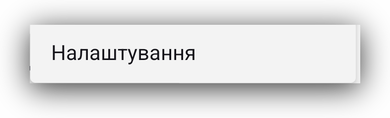Вони поділяються на 5 груп:
Загальне
Дозволи
Дані
Інструменти розробника
Про нас
Давайте розглянемо кожен з них.
Налаштування: Загальні
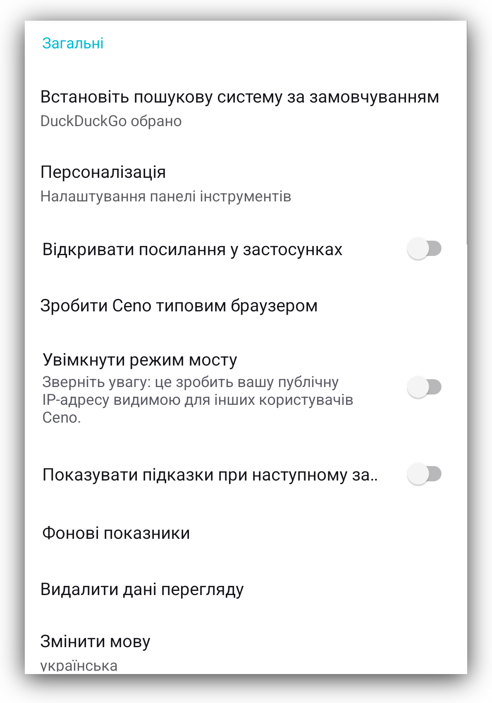Ви, ймовірно, знайомі з більшістю цих налаштувань, оскільки вони схожі на опції, доступні в інших браузерах. У наступних розділах ми коротко опишемо основні з них.
Встановіть пошукову систему за замовчуванням
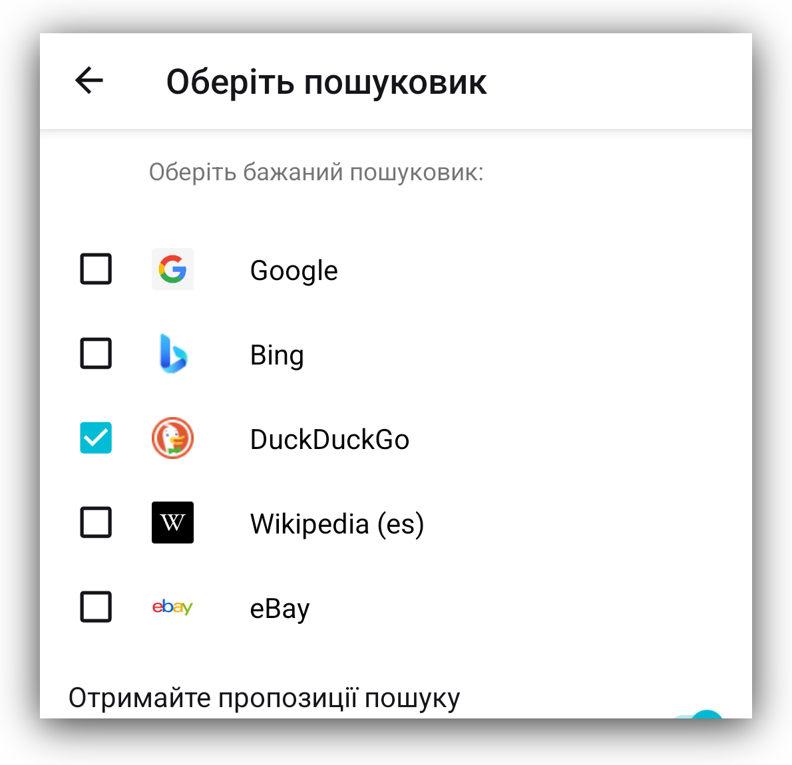Цей параметр дозволяє встановити пошукову систему за замовчуванням для браузера Ceno, встановивши або знявши прапорці з наданих опцій.
Персоналізація
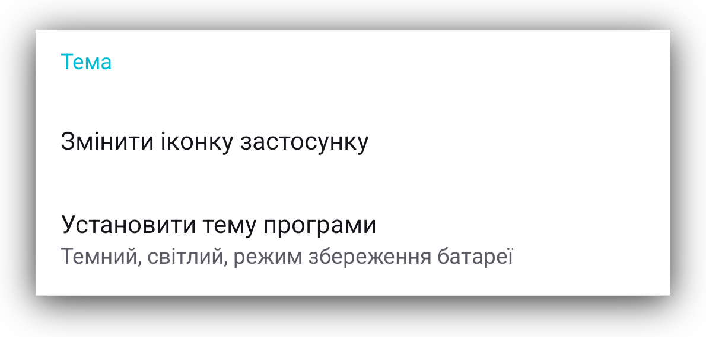Знову ж таки, ці варіанти здебільшого зрозумілі самі по собі.
Хочемо звернути вашу увагу на опцію, якої може не бути в інших додатках. Ceno дозволяє змінювати іконку запуску, що може бути корисно в деяких випадках. Ми пропонуємо кілька варіантів на вибір.
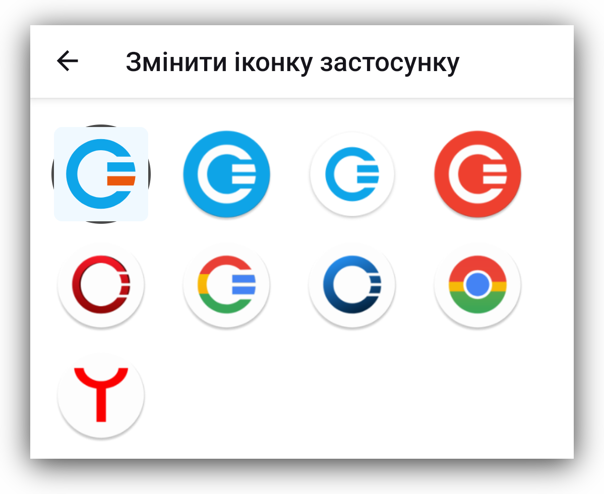Увімкнути режим мости
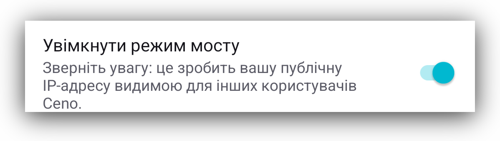Призначення та функціональність режиму мосту високого рівня описано в розділі Режим мосту. Тут ви можете ввімкнути або вимкнути цей параметр.
Фонові показники
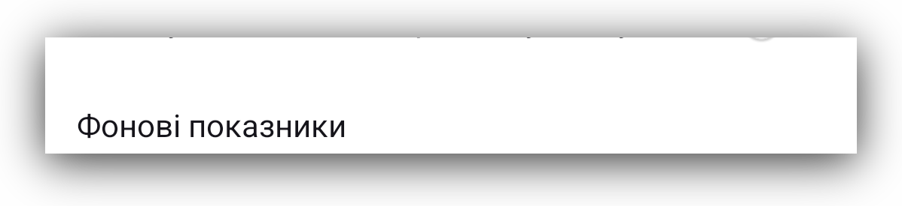Це показники, які допомагають нам зрозуміти будь-які проблеми, що можуть час від часу виникати під час використання браузера Ceno. Натиснувши на «Показники фону», ви відкриєте екран, на якому можна вимкнути показники.
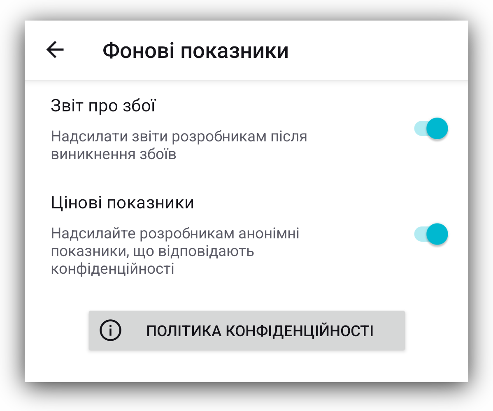Ми рекомендуємо залишити ці налаштування у положенні «Увімкнено», оскільки вони допомагають нам зрозуміти проблеми, з якими можуть зіткнутися деякі користувачі під час використання Ceno. Чим краще ми розуміємо проблеми, тим ефективніше можемо їх вирішувати.
Ми не збираємо жодних персональних даних і не продаємо жодних даних третім особам. Щоб ознайомитися з нашою політикою конфіденційності, натисніть кнопку «Політика конфіденційності».
Звіт про збої
Обставини, умови мережі та пристрої, на яких використовується Ceno, відрізняються для різних користувачів, що іноді може призвести до збою програми Ceno. Щоб зрозуміти, що спричинило збій у конкретній ситуації, Ceno було розроблено таким чином, щоб генерувати звіти про збій та надсилати їх команді розробників. Ви, як користувач, можете увімкнути або вимкнути надсилання звітів про збій.
Ці звіти не містять жодних персональних даних. Якщо у вас виникають збої Ceno, радимо ввімкнути цей параметр
Видалити Дані Перегляду
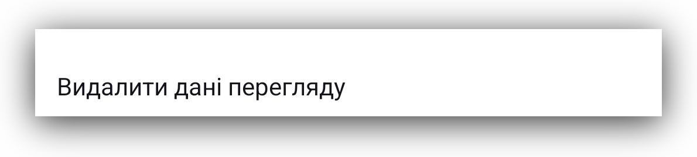Натискання на цю опцію надає вам можливість вибрати, які дані Ceno ви хочете видалити.
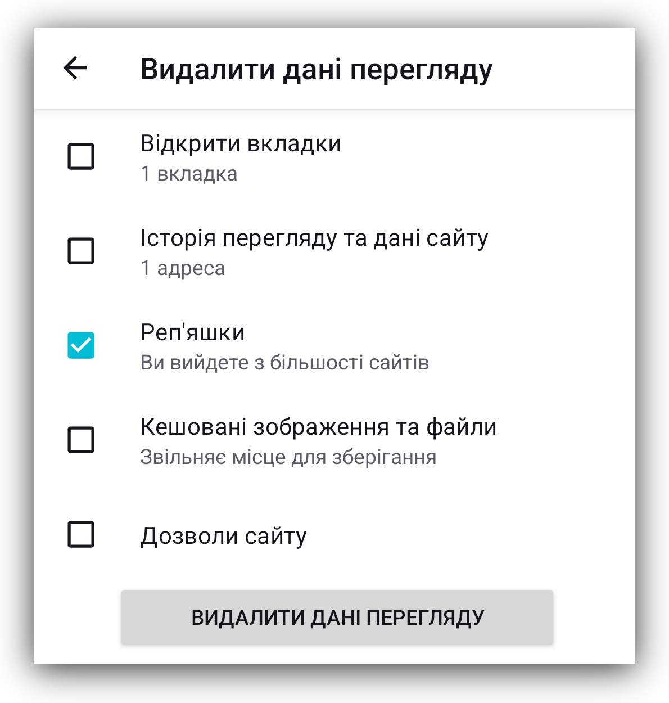Кнопка «Очистити» на головному екрані видаляє всі дані Ceno, але тут ви можете вибрати, що видалити, а що зберегти.
Змінити мову

Додаток Ceno перекладено багатьма мовами. Якщо ви хочете, щоб до цього вже досить великого списку додали ще одну мову, повідомте нас про це. Ви можете зв’язатися з нами електронною поштою support [at] ceno [dot] app або через наш репозиторій gitlab .
Налаштування: Дозволи
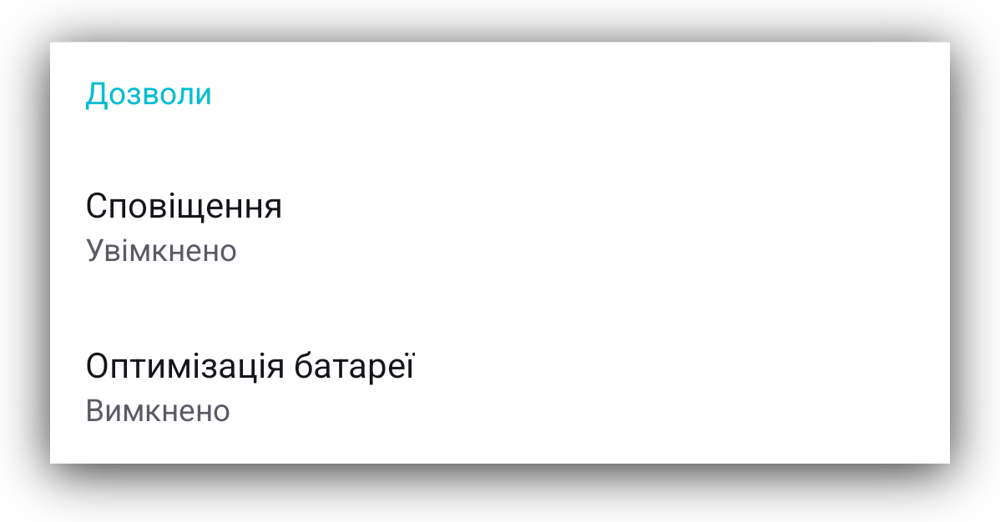Ceno потребує лише двох дозволів: надсилання повідомлень користувачеві та зупинення оптимізації батареї. Ймовірно, вас попросили надати Ceno ці дозволи, коли ви вперше запустили додаток Ceno або після перезапуску після очищення всіх даних Ceno.
Ви можете дізнатися більше про них у розділі Дозволи.
Налаштування: Дані
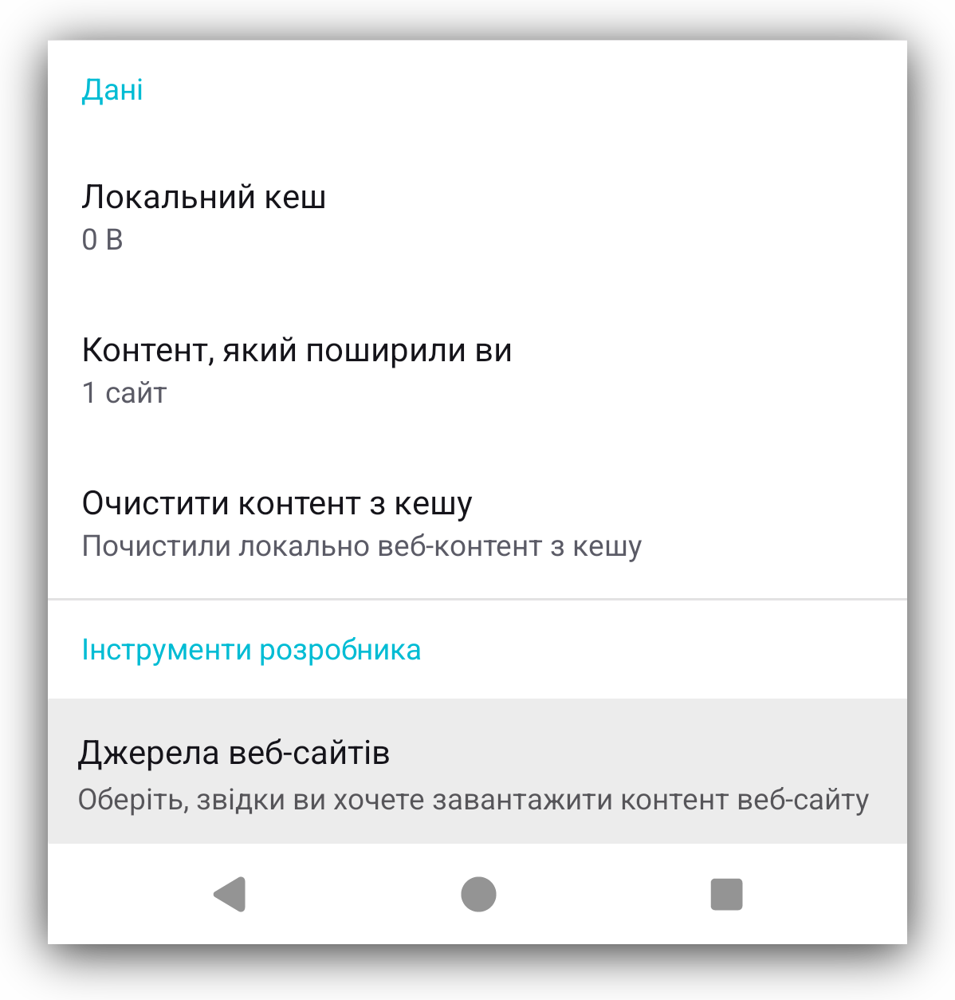У цьому розділі ви можете переглянути, яким контентом ваш додаток Ceno може ділитися з іншими користувачами Ceno, коли вони цього запитують.
Контент, яким ви поділилися містить список вебсайтів, якими ви можете ділитися з іншими користувачами Ceno через ваш додаток Ceno.
Локальний кеш повідомляє вам, скільки даних може бути завантажено з вашого пристрою в мережу Ceno, коли інші користувачі цього запитують.
Натиснувши на опцію Очистити кешований вміст, ви видалите дані з кешу, і вам не залишиться нічого, що можна було б поділитися з друзями. Щоб зберегти веб-сайти в кеші і мати можливість знову поділитися ними з друзями, вам потрібно буде ще раз зайти на них через мережу Ceno Public.
Більше інформації про призначення цих налаштувань доступно в розділі Публічний або особистий доступ.
Налаштування: Інструменти розробника
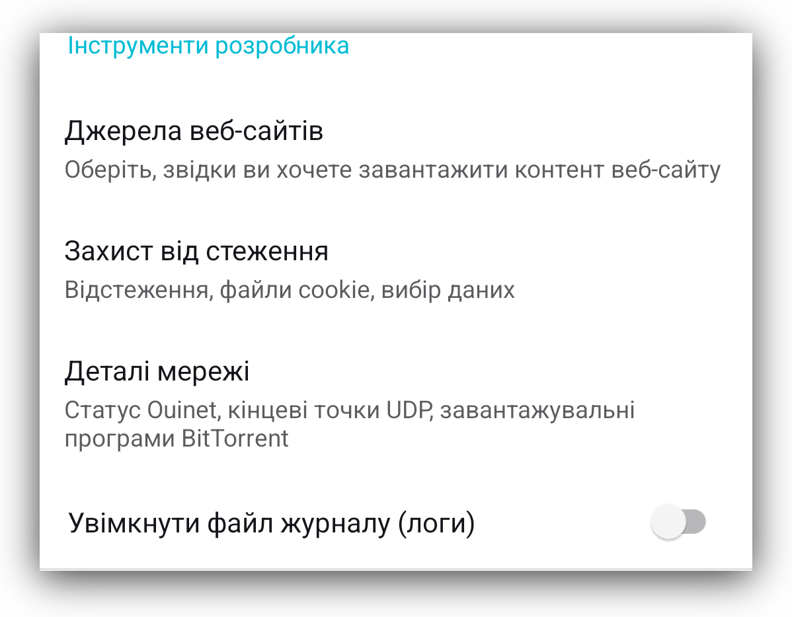Джерела веб-сайтів
Ceno може отримувати вміст веб-сайтів, який ви запитуєте, з різних джерел:
безпосередньо з веб-сайту-джерела, публічної мережі Ceno, приватної мережі Ceno
та кешу Ceno. Більш детальна інформація про ці опції наведена в розділах, що
описують режими публічного та особистого перегляду.
За замовчуванням усі ці опції відмічені, і для досягнення найкращих результатів
ви можете просто залишити їх без змін.
Більш детальну інформацію щодо цих опцій можна знайти в розділі Публічний або особистий.
Захист від відстеження
Ці два налаштування запобігають відстеженню вашої онлайн-активності сторонніми трекерами.
Деталі Мережі
У цьому розділі містяться відомості про налаштування вашої мережі, які можуть бути корисними для нашої команди розробників, якщо нам потрібно буде дослідити будь-які проблеми, про які ви нам повідомляєте.
Увімкнути файл журналу (логи)
Увімкнення та експорт файлу журналу Ceno може бути корисним під час розслідування проблем. Ці файли не містять жодних даних, що дозволяють ідентифікувати особу. Якщо ви експортуєте їх до файлової системи на своєму пристрої, ви зможете переглянути їхній вміст. Ви також можете поділитися ними з нашою командою розробників, якщо у вас виникли проблеми, які можуть потребувати розслідування нашими технічними експертами.
Налаштування: Про нас
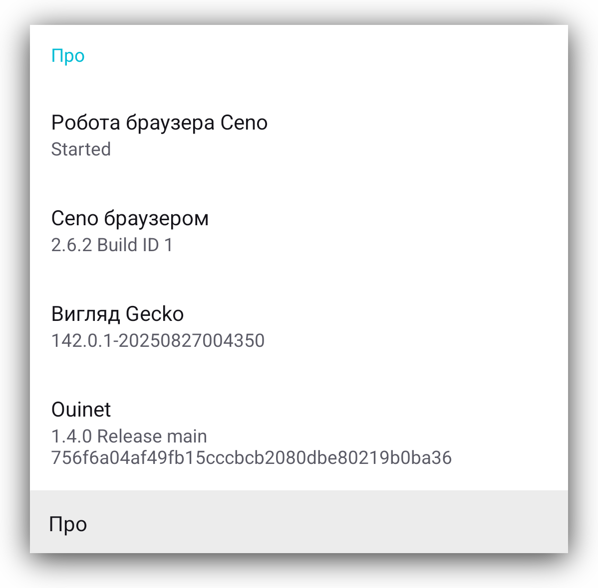Містить додаткову інформацію про вашу інсталяцію Ceno, включаючи номер версії, стан фонової служби Ceno та номер версії бібліотеки Ouinet, вбудованої в Ceno.